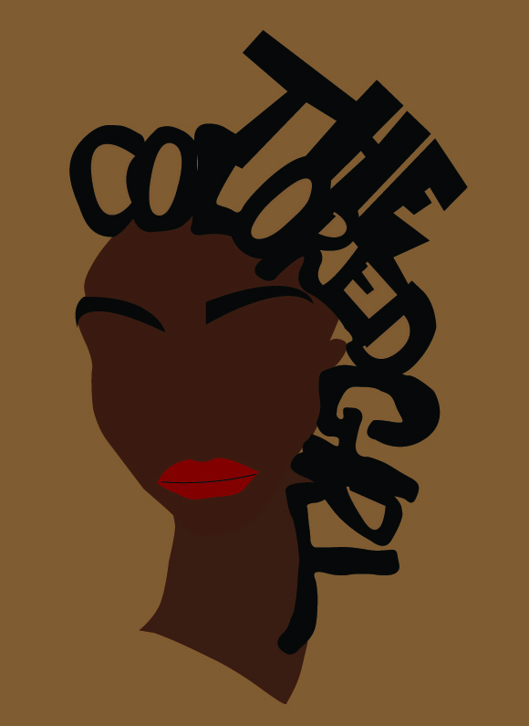

My name is Keonna Barnes and I am a student at BMCC. Now as you all may know there are multiple social causes to support today. But unfortunately I can only talk about one of my choosing, so my choice is the Black Lives Matter movement. This movement means a lot to me because as a person of color I feel as though this movement is both inspiring and important for others to understand. So as a sign of my support of this social cause I have created campaigns as a tribute to a creative agency called The Colored Girl. In hopes of helping this agency gain the recognition deserved and possibly assist greater awareness and participation in the Black Lives Matter Movement. The Colored Girl Website
In this illustration I wanted to show a silhouette of a woman of color. The text that states "The Colored Girl", on her head represents her hair. The background is a lighter brown so it wouldn't blend in with the woman's skin.
In this illustration, my idea was to make a silhouette of hair from some of the women in the agency. To represent a piece of what makes women of color stand out, whether it's hair, figure, or personalities. The background is brown, as a symbol of our skin. I placed it in a box to represent how separate blacks are still being treated from whites. The text is in red to represent it's importance as a warning to the public.
In this illustration my idea was to show how important this movement is. The small text in the background states "The Colored Girl", and the contour drawing was continous, to represent that this is a common issue in the world. Also the drawing is in red as a warning to the public about the Black Lives Matter Movement. Also the drawing is again in black as a symbol of our skin. The text "Black Lives Matter is in red because of its importance.